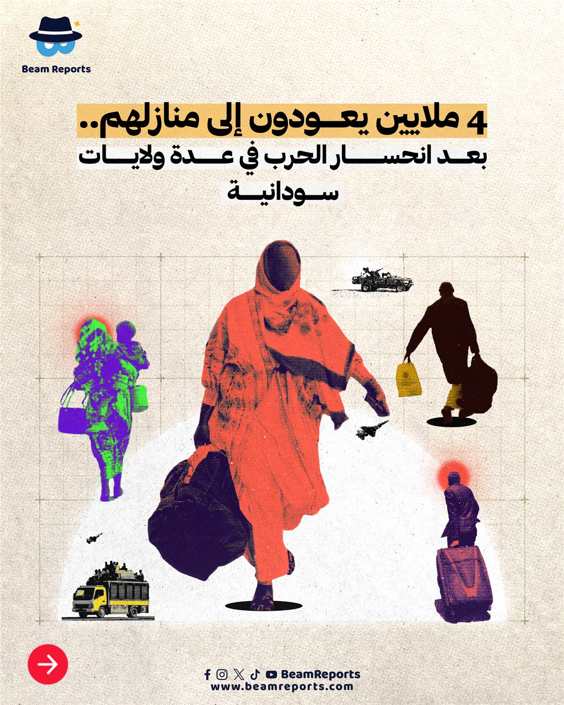
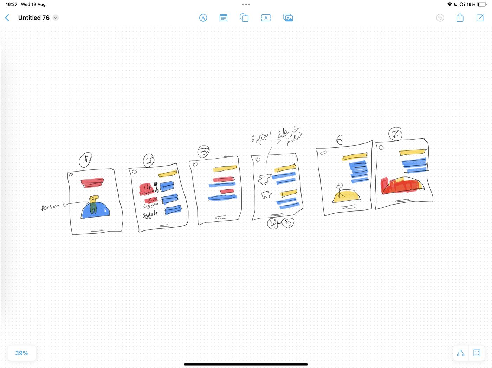
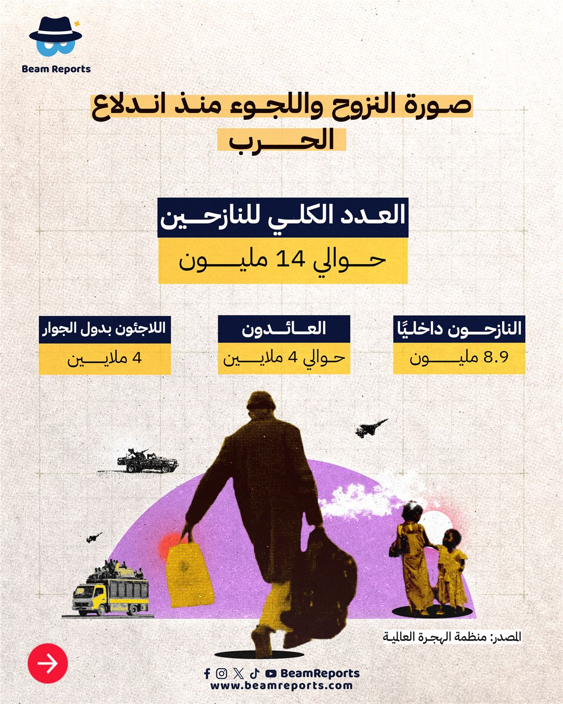
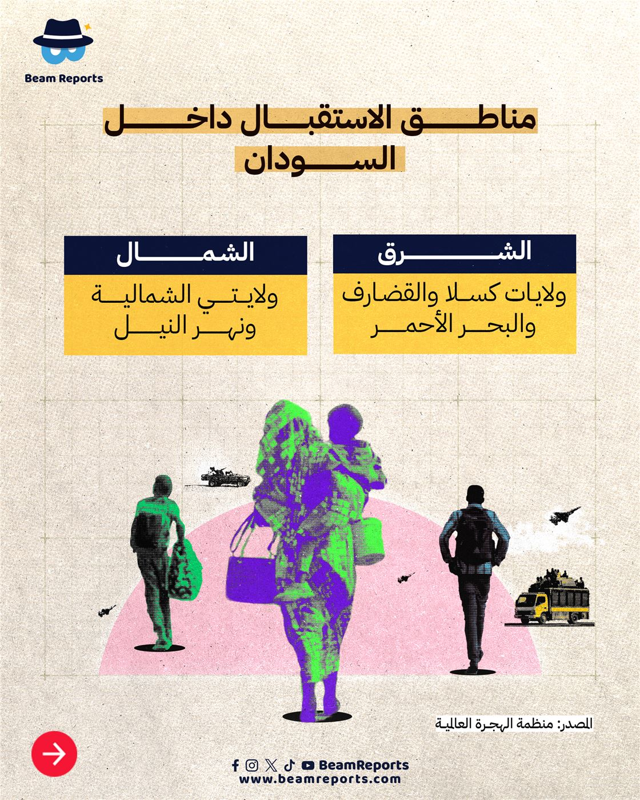
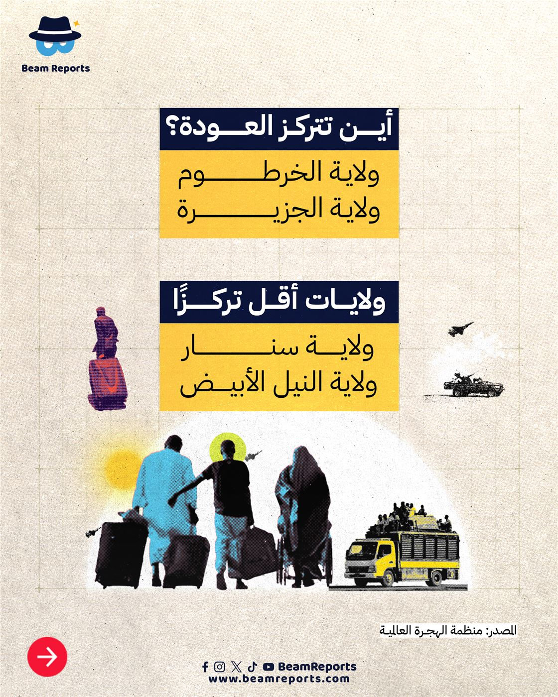
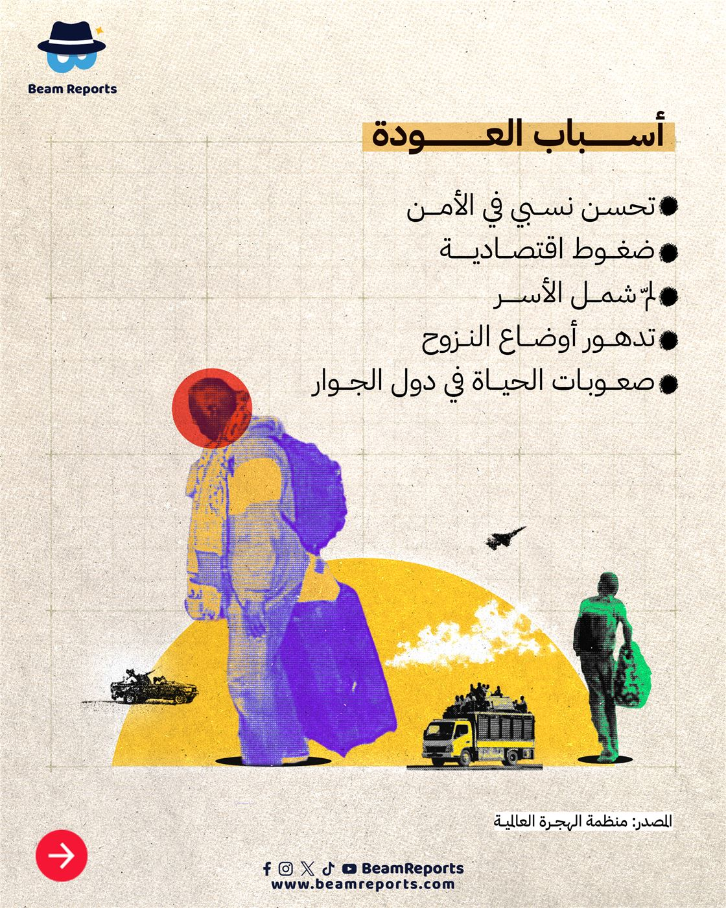
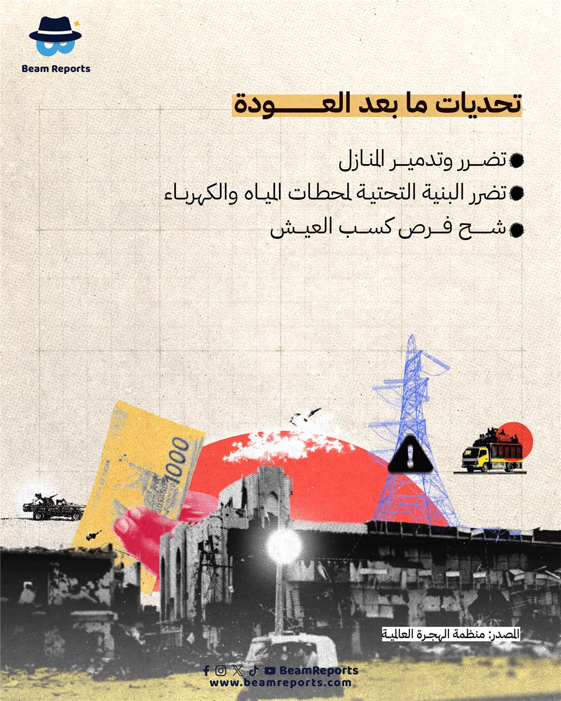

Voluntary Return
Turning a humanitarian data report into a visual story.

Context & process
An International Organization for Migration (IOM) report on voluntary return contained dense humanitarian data (return routes, causes, resettlement numbers) written for a policy audience, not a general public. A reporter distilled the report's key findings into the carousel's copy.
I identified the opportunity to translate that content into a visual narrative that could reach a much wider audience without losing its context or accuracy. Working from the provided copy and source report, I originated the visual concept, structure, and every illustration myself.
Early process
Thumbnail sketches let me test pacing and information hierarchy before full illustration, deciding how many narrative "beats" the story needed, and where data should interrupt versus support it.

The decision
How do you represent mass displacement without reducing people to statistics or exploiting their circumstances for visual drama?
I rendered displaced individuals as large, dignified illustrated figures set against smaller documentary-style background elements: trucks, route maps, location markers.
Data stayed visible and legible, while the human subjects remained the visual and emotional center of every slide.





Outcome
For a single organic post translating a policy report into public-facing content, this reach validated the core bet: humanitarian data becomes more shareable when it's designed to be read as a story, not a report.
Reflection
What I'd carry into future work: illustrated figures at this scale are a legible way to keep data and dignity in the same frame, even at low reach. I'd want to apply that same illustration approach to a topic with a built-in audience, to see how the format performs when distribution isn't the constraint.